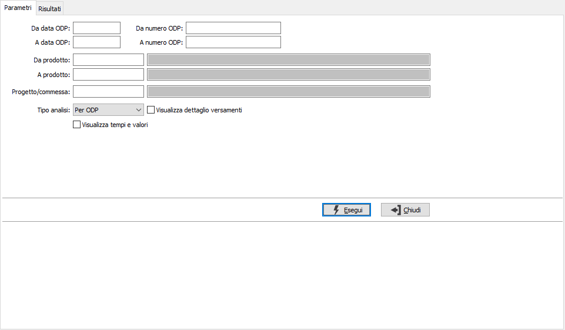
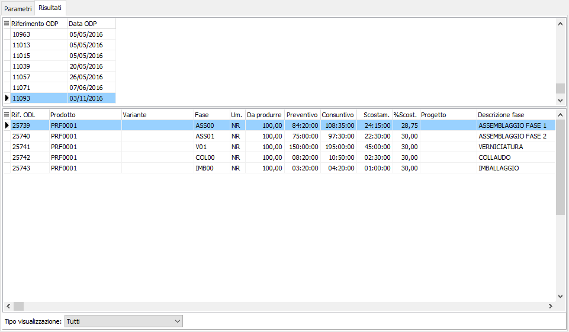

Raffronto tempi di produzione
La funzione risponde all’esigenza di verificare gli scostamenti sui tempi di lavorazione mettendo a confronto i tempi preventivati in fase di piano con i tempi consuntivati in fase di versamento.
Nella pagina dei parametri sono presenti i criteri di selezione per numero ODP, data ODP, prodotto e se gestito anche per progetto; è possibile verificare gli scostamenti per specifico ODP, per prodotto e per progetto utilizzando il combo "Tipo analisi"; è possibile visualizzare anche i versamenti spuntando la casella "Visualizza dettagli versamenti" ed è possibile visualizzare anche la valorizzazione dei tempi registrati spuntando la casella "Visualizza tempi e valori".
Premendo il pulsante Esegui si avvia l'elaborazione che porterà alla pagina dei risultati.

La pagina dei Risultati presenta una griglia superiore che riporta, in base al tipo di visualizzazione ODP, prodotto o progetto; la griglia sottostante riporta gli ODL collegati, se richiesto nei parametri, è presente anche la griglia con i versamenti relativi all'ODL. è possibile, tramite la combo "Tipo visualizzazione" impostare un filtro per selezionare gli elementi che a consuntivo non rispettano i preventivi sia in più che in meno.
I risultati presentati a video possono anche essere stampati.
